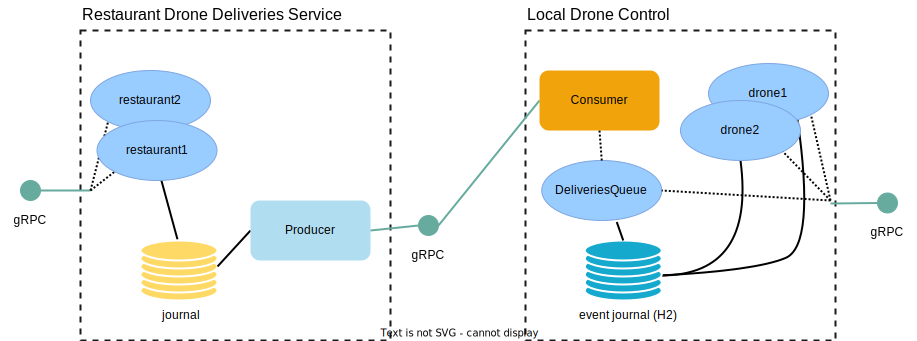

Local Drone Delivery Selection
In the previous step of the guide we implemented the means for the cloud service to keep track of restaurant and the queue of registered deliveries for each.

We want to replicate the registered events to each local-drone-control PoP so that the drones close to it can pick up orders and perform the deliveries.
Again we will use Akka Projection gRPC to do service-to-service events passing without requiring a message broker in between services.
We will then implement a service allowing the drones to ask the local-drone-control to assign them the closest waiting delivery.
Replication of the delivery events
First we must set up replication of the events from the restaurant-drone-deliveries-service.
The regular Akka Projection gRPC behavior is that the consumer connects to the producer, in this case the local-drone-control being the consumer connecting to the cloud.
To implement this we define an EventProducerSource and create a gRPC request handler for it. We use a protobuf message that we transform the internal domain event DeliveryRegistered using a Transformation. Any other message type is filtered out and not replicated to the consumers using the orElseMapper:
- Scala
-
source
package central.deliveries import akka.actor.typed.ActorSystem import akka.persistence.query.typed.EventEnvelope import akka.projection.grpc.producer.EventProducerSettings import akka.projection.grpc.producer.scaladsl.EventProducer import akka.projection.grpc.producer.scaladsl.EventProducer.Transformation import scala.concurrent.Future object DeliveryEvents { def eventProducerSource( system: ActorSystem[_]): EventProducer.EventProducerSource = { val transformation = Transformation.empty .registerAsyncEnvelopeMapper[ RestaurantDeliveries.DeliveryRegistered, proto.DeliveryRegistered](envelope => Future.successful(Some(transformDeliveryRegistration(envelope)))) // filter all other types of events for the RestaurantDeliveries .registerOrElseMapper(_ => None) val eventProducerSource = EventProducer.EventProducerSource( RestaurantDeliveries.EntityKey.name, // Note: stream id used in consumer to consume this specific stream "delivery-events", transformation, EventProducerSettings(system)) eventProducerSource } private def transformDeliveryRegistration( envelope: EventEnvelope[RestaurantDeliveries.DeliveryRegistered]) : proto.DeliveryRegistered = { val delivery = envelope.event.delivery proto.DeliveryRegistered( deliveryId = delivery.deliveryId, origin = Some(delivery.origin.toProto), destination = Some(delivery.destination.toProto)) } } - Java
-
source
package central.deliveries; import akka.actor.typed.ActorSystem; import akka.persistence.query.typed.EventEnvelope; import akka.projection.grpc.producer.EventProducerSettings; import akka.projection.grpc.producer.javadsl.EventProducerSource; import akka.projection.grpc.producer.javadsl.Transformation; import central.deliveries.proto.DeliveryRegistered; import java.util.Optional; import java.util.concurrent.CompletableFuture; import java.util.concurrent.CompletionStage; public final class DeliveryEvents { // Note: stream id used in consumer to consume this specific stream public static final String STREAM_ID = "delivery-events"; public static EventProducerSource eventProducerSource(ActorSystem<?> system) { var transformation = Transformation.empty() .registerAsyncEnvelopeMapper( RestaurantDeliveries.DeliveryRegistered.class, DeliveryEvents::transformDeliveryRegistration) // exclude all other types of events for the RestaurantDeliveries .registerOrElseMapper(envelope -> Optional.empty()); return new EventProducerSource( RestaurantDeliveries.ENTITY_KEY.name(), STREAM_ID, transformation, EventProducerSettings.create(system)); } private static CompletionStage<Optional<DeliveryRegistered>> transformDeliveryRegistration( EventEnvelope<RestaurantDeliveries.DeliveryRegistered> envelope) { var delivery = envelope.event().delivery; return CompletableFuture.completedFuture( Optional.of( central.deliveries.proto.DeliveryRegistered.newBuilder() .setDeliveryId(delivery.deliveryId) .setOrigin(delivery.origin.toProto()) .setDestination(delivery.destination.toProto()) .build())); } }
The gRPC request handler is composed with the other gRPC handlers of the service into a single bound server:
- Scala
-
source
val service = ServiceHandler.concatOrNotFound( DroneOverviewServiceHandler.partial(droneOverviewService), RestaurantDeliveriesServiceHandler.partial(restaurantDeliveriesService), ChargingStationServiceHandler.partial(chargingStationService), eventPullHandler, eventPushHandler, ServerReflection.partial( List( DroneOverviewService, RestaurantDeliveriesService, ChargingStationService))) val bound = Http(system).newServerAt(interface, port).bind(service) - Java
-
source
@SuppressWarnings("unchecked") var service = ServiceHandler.concatOrNotFound( DroneOverviewServiceHandlerFactory.create(droneOverviewService, system), RestaurantDeliveriesServiceHandlerFactory.create(restaurantDeliveriesService, system), ChargingStationServiceHandlerFactory.create(chargingStationService, system), eventPullHandler, eventPushHandler, ServerReflection.create( List.of( DroneOverviewService.description, RestaurantDeliveriesService.description, ChargingStationService.description), system)); var bound = Http.get(system).newServerAt(host, port).bind(service);
Since we expect a high number of local-drone-control edge systems connecting to the restaurant-drone-deliveries-service to consume the restaurant orders we configure the events-by-slice-firehose for the projection. The firehose tries to share the stream of events across consumers connected to the same node, instead of each consumer executing its queries in parallel, so that less load is applied to the database.
The firehose is enabled through the following configuration selecting it as query-plugin-id for the akka.projection.grpcproducer and then configuring the actual underlying akka.persistence.r2dbc.query as query plugin for the firehose:
- Scala
-
source
akka.projection.grpc { producer { # use the firehose for order events so that the local-drone-control consumers # shares the same firehose instead of each lead to load on the database query-plugin-id = "akka.persistence.query.events-by-slice-firehose" } } akka.persistence.query.events-by-slice-firehose { delegate-query-plugin-id = "akka.persistence.r2dbc.query" } - Java
-
source
akka.projection.grpc { producer { # use the firehose for order events so that the local-drone-control consumers # shares the same firehose instead of each lead to load on the database query-plugin-id = "akka.persistence.query.events-by-slice-firehose" } } akka.persistence.query.events-by-slice-firehose { delegate-query-plugin-id = "akka.persistence.r2dbc.query" }
Delivery queue actor
The queue of all deliveries for one local-drone-control service is managed by a single durable state actor to keep things simple.
For a high throughput of deliveries, a single actor might become a congestion point and a more clever scheme, for example partitioning the deliveries into multiple queues based on the coarse grained coordinate of the restaurant, could make sense.
Commands and events
The actor accepts the command AddDelivery to enqueue a delivery, the commands RequestDelivery and CompleteDelivery for drones to pick up and complete deliveries and GetCurrentState for us to be able to inspect the current state of the queue:
- Scala
-
source
sealed trait Command extends CborSerializable final case class AddDelivery( waitingDelivery: WaitingDelivery, replyTo: ActorRef[Done]) extends Command final case class RequestDelivery( droneId: String, droneCoordinates: Coordinates, replyTo: ActorRef[StatusReply[WaitingDelivery]]) extends Command final case class CompleteDelivery( deliveryId: String, replyTo: ActorRef[StatusReply[Done]]) extends Command final case class GetCurrentState(replyTo: ActorRef[State]) extends Command - Java
-
source
public interface Command extends CborSerializable {} public static final class AddDelivery implements Command { public final WaitingDelivery delivery; public final ActorRef<Done> replyTo; public AddDelivery(WaitingDelivery delivery, ActorRef<Done> replyTo) { this.delivery = delivery; this.replyTo = replyTo; } } public static final class RequestDelivery implements Command { public final String droneId; public final Coordinates droneCoordinates; public final ActorRef<StatusReply<WaitingDelivery>> replyTo; public RequestDelivery( String droneId, Coordinates droneCoordinates, ActorRef<StatusReply<WaitingDelivery>> replyTo) { this.droneId = droneId; this.droneCoordinates = droneCoordinates; this.replyTo = replyTo; } } public static final class CompleteDelivery implements Command { public final String deliveryId; public final ActorRef<StatusReply<Done>> replyTo; public CompleteDelivery(String deliveryId, ActorRef<StatusReply<Done>> replyTo) { this.deliveryId = deliveryId; this.replyTo = replyTo; } } public static final class GetCurrentState implements Command { public final ActorRef<State> replyTo; @JsonCreator public GetCurrentState(ActorRef<State> replyTo) { this.replyTo = replyTo; } }
State
In the state of the actor, we keep two lists, one is the waiting queue of deliveries, and one is the currently picked up deliveries, waiting for the drone to report back once the delivery completed:
- Scala
-
source
final case class WaitingDelivery( deliveryId: String, from: Coordinates, to: Coordinates) extends CborSerializable final case class DeliveryInProgress( deliveryId: String, droneId: String, pickupTime: Instant) final case class State( waitingDeliveries: Vector[WaitingDelivery], deliveriesInProgress: Vector[DeliveryInProgress]) extends CborSerializable - Java
-
source
public static final class State implements CborSerializable { public final List<WaitingDelivery> waitingDeliveries; public final List<DeliveryInProgress> deliveriesInProgress; public State() { waitingDeliveries = new ArrayList<>(); deliveriesInProgress = new ArrayList<>(); } public State( List<WaitingDelivery> waitingDeliveries, List<DeliveryInProgress> deliveriesInProgress) { this.waitingDeliveries = waitingDeliveries; this.deliveriesInProgress = deliveriesInProgress; } } public static final class WaitingDelivery implements CborSerializable { public final String deliveryId; public final Coordinates from; public final Coordinates to; public WaitingDelivery(String deliveryId, Coordinates from, Coordinates to) { this.deliveryId = deliveryId; this.from = from; this.to = to; } @Override public boolean equals(Object o) { if (this == o) return true; if (o == null || getClass() != o.getClass()) return false; WaitingDelivery that = (WaitingDelivery) o; if (!deliveryId.equals(that.deliveryId)) return false; if (!from.equals(that.from)) return false; return to.equals(that.to); } @Override public int hashCode() { int result = deliveryId.hashCode(); result = 31 * result + from.hashCode(); result = 31 * result + to.hashCode(); return result; } @Override public String toString() { return "WaitingDelivery{" + "deliveryId='" + deliveryId + '\'' + ", from=" + from + ", to=" + to + '}'; } } public static final class DeliveryInProgress { public final String deliveryId; public final String droneId; public final Instant pickupTime; public DeliveryInProgress(String deliveryId, String droneId, Instant pickupTime) { this.deliveryId = deliveryId; this.droneId = droneId; this.pickupTime = pickupTime; } }
Command handler
The command handler de-duplicates orders by id for AddDelivery to avoid duplicates.
When a RequestDelivery comes in, we first check that there are deliveries waiting, and if there are we find the one where the restaurant is closest to the current location of the drone. We then move the delivery from the waitingDeliveries queue to the deliveriesInProgress list, so that it is not selected again for another drone, and persist the state.
For the CompleteDelivery command, the delivery is removed from the state and then the updated state is persisted.
- Scala
-
source
private def onCommand(context: ActorContext[Command])( state: State, command: Command): Effect[State] = command match { case AddDelivery(delivery, replyTo) => context.log.info("Adding delivery [{}] to queue", delivery.deliveryId) if (state.waitingDeliveries.contains( delivery) || state.deliveriesInProgress.exists( _.deliveryId == delivery.deliveryId)) Effect.reply(replyTo)(Done) else Effect .persist( state.copy(waitingDeliveries = state.waitingDeliveries :+ delivery)) .thenReply(replyTo)(_ => Done) case RequestDelivery(droneId, droneCoordinates, replyTo) => if (state.waitingDeliveries.isEmpty) Effect.reply(replyTo)(StatusReply.Error("No waiting orders")) else { val closestPickupForDrone = state.waitingDeliveries.minBy(delivery => droneCoordinates.distanceTo(delivery.from)) context.log.info( "Selected next delivery [{}] for drone [{}]", closestPickupForDrone.deliveryId, droneId) // Note: A real application would have to care more about retries/lost data here Effect .persist( state.copy( waitingDeliveries = state.waitingDeliveries.filterNot(_ == closestPickupForDrone), state.deliveriesInProgress :+ DeliveryInProgress( closestPickupForDrone.deliveryId, droneId, Instant.now()))) .thenReply(replyTo)(_ => StatusReply.Success(closestPickupForDrone)) } case CompleteDelivery(deliveryId, replyTo) => if (!state.deliveriesInProgress.exists(_.deliveryId == deliveryId)) { Effect.reply(replyTo)( StatusReply.Error(s"Unknown delivery id: ${deliveryId}")) } else { Effect .persist(state.copy(deliveriesInProgress = state.deliveriesInProgress.filterNot(_.deliveryId == deliveryId))) .thenReply(replyTo)(_ => StatusReply.Success(Done)) } case GetCurrentState(replyTo) => Effect.reply(replyTo)(state) } - Java
-
source
@Override public CommandHandler<Command, State> commandHandler() { return newCommandHandlerBuilder() .forAnyState() .onCommand(AddDelivery.class, this::onAddDelivery) .onCommand(RequestDelivery.class, this::onRequestDelivery) .onCommand(CompleteDelivery.class, this::onCompleteDelivery) .onCommand(GetCurrentState.class, this::onGetCurrentState) .build(); } private Effect<State> onAddDelivery(State state, AddDelivery command) { context.getLog().info("Adding delivery [{}] to queue", command.delivery.deliveryId); if (state.waitingDeliveries.contains(command.delivery) || state.deliveriesInProgress.stream() .anyMatch( deliveryInProgress -> deliveryInProgress.deliveryId.equals(command.delivery.deliveryId))) return Effect().reply(command.replyTo, done()); else { state.waitingDeliveries.add(command.delivery); return Effect().persist(state).thenReply(command.replyTo, updatedState -> done()); } } private Effect<State> onRequestDelivery(State state, RequestDelivery command) { if (state.waitingDeliveries.isEmpty()) { return Effect().reply(command.replyTo, StatusReply.error("No waiting orders")); } else { var closestPickupForDrone = state.waitingDeliveries.stream() .min( Comparator.comparingLong( delivery -> command.droneCoordinates.distanceTo(delivery.from))) .get(); context .getLog() .info( "Selected next delivery [{}] for drone [{}]", closestPickupForDrone.deliveryId, command.droneId); // Note: A real application would have to care more about retries/lost data here state.waitingDeliveries.remove(closestPickupForDrone); state.deliveriesInProgress.add( new DeliveryInProgress(closestPickupForDrone.deliveryId, command.droneId, Instant.now())); return Effect() .persist(state) .thenReply(command.replyTo, updatedState -> StatusReply.success(closestPickupForDrone)); } } private Effect<State> onCompleteDelivery(State state, CompleteDelivery command) { var maybeExisting = state.deliveriesInProgress.stream() .filter(delivery -> delivery.deliveryId.equals(command.deliveryId)) .findFirst(); if (maybeExisting.isEmpty()) { return Effect() .reply(command.replyTo, StatusReply.error("Unknown delivery id: " + command.deliveryId)); } else { var existing = maybeExisting.get(); state.deliveriesInProgress.remove(existing); return Effect() .persist(state) .thenReply(command.replyTo, updatedState -> StatusReply.success(done())); } } private Effect<State> onGetCurrentState(State state, GetCurrentState command) { // defensive copy since state is mutable (individual values in the lists are immutable) var stateToShare = new State( new ArrayList<>(state.waitingDeliveries), new ArrayList<>(state.deliveriesInProgress)); return Effect().reply(command.replyTo, stateToShare); }
Consuming the delivery events
To consume the stream of delivery events from the central cloud we need to set up a projection. We only want to consume the events for the location id of the particular local-drone-control service, this is done through a consumer filter first excluding all events and then selecting only the events for the configured location id:
- Scala
-
source
package local.drones import akka.actor.typed.{ ActorRef, ActorSystem, Behavior } import akka.grpc.GrpcClientSettings import akka.persistence.Persistence import akka.persistence.query.typed.EventEnvelope import akka.projection.eventsourced.scaladsl.EventSourcedProvider import akka.projection.grpc.consumer.{ ConsumerFilter, GrpcQuerySettings } import akka.projection.grpc.consumer.scaladsl.GrpcReadJournal import akka.projection.r2dbc.scaladsl.R2dbcProjection import akka.projection.scaladsl.Handler import akka.projection.{ ProjectionBehavior, ProjectionId } import akka.util.Timeout /** * Consume delivery events from the cloud and pass to the delivery queue actor */ object DeliveryEvents { def projectionBehavior( queueActor: ActorRef[DeliveriesQueue.Command], settings: Settings)( implicit system: ActorSystem[_]): Behavior[ProjectionBehavior.Command] = { val projectionName: String = "delivery-events" implicit val timeout: Timeout = settings.askTimeout val eventsBySlicesQuery = GrpcReadJournal( GrpcQuerySettings(system).withInitialConsumerFilter( // location id already is in the format of a topic filter expression Vector( ConsumerFilter.excludeAll, ConsumerFilter.IncludeTopics(Set(settings.locationId)))), GrpcClientSettings.fromConfig( system.settings.config .getConfig("akka.projection.grpc.consumer.client")), List(central.deliveries.proto.DeliveryEventsProto.javaDescriptor)) // single projection handling all slices val sliceRanges = Persistence(system).sliceRanges(1) val sliceRange = sliceRanges(0) val projectionKey = s"${eventsBySlicesQuery.streamId}-${sliceRange.min}-${sliceRange.max}" val projectionId = ProjectionId.of(projectionName, projectionKey) val sourceProvider = EventSourcedProvider .eventsBySlices[central.deliveries.proto.DeliveryRegistered]( system, eventsBySlicesQuery, eventsBySlicesQuery.streamId, sliceRange.min, sliceRange.max) import akka.actor.typed.scaladsl.AskPattern._ val handler: Handler[ EventEnvelope[central.deliveries.proto.DeliveryRegistered]] = { envelope => queueActor.ask( DeliveriesQueue.AddDelivery( DeliveriesQueue.WaitingDelivery( deliveryId = envelope.event.deliveryId, from = Coordinates.fromProto(envelope.event.origin.get), to = Coordinates.fromProto(envelope.event.destination.get)), _)) } ProjectionBehavior( R2dbcProjection .atLeastOnceAsync(projectionId, None, sourceProvider, () => handler)) } } - Java
-
source
package local.drones; import static akka.actor.typed.javadsl.AskPattern.*; import akka.Done; import akka.actor.typed.ActorRef; import akka.actor.typed.ActorSystem; import akka.actor.typed.Behavior; import akka.grpc.GrpcClientSettings; import akka.persistence.Persistence; import akka.persistence.query.typed.EventEnvelope; import akka.projection.ProjectionBehavior; import akka.projection.ProjectionId; import akka.projection.eventsourced.javadsl.EventSourcedProvider; import akka.projection.grpc.consumer.ConsumerFilter; import akka.projection.grpc.consumer.GrpcQuerySettings; import akka.projection.grpc.consumer.javadsl.GrpcReadJournal; import akka.projection.javadsl.Handler; import akka.projection.r2dbc.javadsl.R2dbcProjection; import central.deliveries.proto.DeliveryRegistered; import java.util.Arrays; import java.util.Collections; import java.util.Optional; /** Consume delivery events from the cloud and pass to the delivery queue actor */ public class DeliveryEvents { public static Behavior<ProjectionBehavior.Command> projectionBehavior( ActorSystem<?> system, ActorRef<DeliveriesQueue.Command> queueActor, Settings settings) { var projectionName = "delivery-events"; var eventsBySlicesQuery = GrpcReadJournal.create( system, GrpcQuerySettings.create(system) .withInitialConsumerFilter( // location id already is in the format of a topic filter expression Arrays.asList( ConsumerFilter.excludeAll(), new ConsumerFilter.IncludeTopics( Collections.singleton(settings.locationId)))), GrpcClientSettings.fromConfig( system.settings().config().getConfig("akka.projection.grpc.consumer.client"), system), Arrays.asList(central.deliveries.proto.DeliveryEvents.getDescriptor())); // single projection handling all slices var sliceRanges = Persistence.get(system).getSliceRanges(1); var sliceRange = sliceRanges.get(0); var projectionKey = eventsBySlicesQuery.streamId() + "-" + sliceRange.first() + "-" + sliceRange.second(); var projectionId = ProjectionId.of(projectionName, projectionKey); var sourceProvider = EventSourcedProvider.<central.deliveries.proto.DeliveryRegistered>eventsBySlices( system, eventsBySlicesQuery, eventsBySlicesQuery.streamId(), sliceRange.first(), sliceRange.second()); var handler = Handler.fromFunction( (EventEnvelope<DeliveryRegistered> envelope) -> ask( queueActor, (ActorRef<Done> replyTo) -> new DeliveriesQueue.AddDelivery( new DeliveriesQueue.WaitingDelivery( envelope.event().getDeliveryId(), Coordinates.fromProto(envelope.event().getOrigin()), Coordinates.fromProto(envelope.event().getDestination())), replyTo), settings.askTimeout, system.scheduler())); return ProjectionBehavior.create( R2dbcProjection.atLeastOnceAsync( projectionId, Optional.empty(), sourceProvider, () -> handler, system)); } }
gRPC services
Drone deliveries
The method for drones to select the next delivery, and to complete it are added to the existing drone service:
- Scala
-
source
syntax = "proto3"; option java_multiple_files = true; option java_package = "local.drones.proto"; import "google/protobuf/empty.proto"; import "google/protobuf/timestamp.proto"; import "common/coordinates.proto"; package local.drones; // gRPC definition for DroneService, for drones to interact with service DroneService { rpc ReportLocation (ReportLocationRequest) returns (google.protobuf.Empty) {} // deliveries rpc RequestNextDelivery (RequestNextDeliveryRequest) returns (RequestNextDeliveryResponse) {} rpc CompleteDelivery (CompleteDeliveryRequest) returns (google.protobuf.Empty) {} // charging rpc GoCharge (GoChargeRequest) returns (ChargingResponse) {} rpc CompleteCharge (CompleteChargeRequest) returns (CompleteChargingResponse) {} } message ReportLocationRequest { string drone_id = 1; common.Coordinates coordinates = 2; // altitude in meters double altitude = 4; } message RequestNextDeliveryRequest { string drone_id = 1; } message RequestNextDeliveryResponse { string delivery_id = 1; common.Coordinates from = 2; common.Coordinates to = 3; } message CompleteDeliveryRequest { string delivery_id = 1; } message GoChargeRequest { string drone_id = 1; string charging_station_id = 2; } message ChargingResponse { oneof response { ChargingStarted started = 1; ComeBackLater come_back_later = 2; }; } message ChargingStarted { google.protobuf.Timestamp expected_complete = 1; } message ComeBackLater { google.protobuf.Timestamp first_slot_free_at = 1; } message CompleteChargeRequest { string charging_station_id = 1; string drone_id = 2; } message CompleteChargingResponse { } - Java
-
source
syntax = "proto3"; option java_multiple_files = true; option java_package = "local.drones.proto"; import "common/coordinates.proto"; import "google/protobuf/timestamp.proto"; package local.drones; // gRPC definition for DroneService, for drones to interact with service DroneService { rpc ReportLocation (ReportLocationRequest) returns (ReportLocationResponse) {} // deliveries rpc RequestNextDelivery (RequestNextDeliveryRequest) returns (RequestNextDeliveryResponse) {} rpc CompleteDelivery (CompleteDeliveryRequest) returns (CompleteDeliveryResponse) {} // charging rpc GoCharge (GoChargeRequest) returns (ChargingResponse) {} rpc CompleteCharge (CompleteChargeRequest) returns (CompleteChargingResponse) {} } message ReportLocationRequest { string drone_id = 1; common.Coordinates coordinates = 2; // altitude in meters double altitude = 4; } message ReportLocationResponse { } message RequestNextDeliveryRequest { string drone_id = 1; } message RequestNextDeliveryResponse { string delivery_id = 1; common.Coordinates from = 2; common.Coordinates to = 3; } message CompleteDeliveryRequest { string delivery_id = 1; } message CompleteDeliveryResponse { } message GoChargeRequest { string drone_id = 1; string charging_station_id = 2; } message ChargingResponse { oneof response { ChargingStarted started = 1; ComeBackLater come_back_later = 2; }; } message ChargingStarted { google.protobuf.Timestamp expected_complete = 1; } message ComeBackLater { google.protobuf.Timestamp first_slot_free_at = 1; } message CompleteChargeRequest { string charging_station_id = 1; string drone_id = 2; } message CompleteChargingResponse { }
Implementation of the generated service interface:
- Scala
-
source
package local.drones import akka.Done import akka.actor.typed.scaladsl.AskPattern._ import akka.actor.typed.{ ActorRef, ActorSystem } import akka.cluster.sharding.typed.scaladsl.ClusterSharding import akka.cluster.sharding.typed.scaladsl.EntityRef import akka.grpc.GrpcServiceException import akka.util.Timeout import charging.ChargingStation import com.google.protobuf.empty.Empty import com.google.protobuf.timestamp.Timestamp import io.grpc.Status import org.slf4j.LoggerFactory import local.drones.proto import scala.concurrent.Future import scala.concurrent.TimeoutException class DroneServiceImpl( deliveriesQueue: ActorRef[DeliveriesQueue.Command], chargingStationEntityRefFactory: String => EntityRef[ ChargingStation.Command], settings: Settings)(implicit system: ActorSystem[_]) extends proto.DroneService { import system.executionContext private val logger = LoggerFactory.getLogger(getClass) implicit private val timeout: Timeout = settings.askTimeout private val sharding = ClusterSharding(system) override def reportLocation( in: proto.ReportLocationRequest): Future[Empty] = { val coordinates = in.coordinates.getOrElse { throw new GrpcServiceException( Status.INVALID_ARGUMENT.withDescription( "coordinates are required but missing")) } logger.info( "Report location ({},{},{}) for drone {}", coordinates.latitude, coordinates.longitude, in.altitude, in.droneId) val entityRef = sharding.entityRefFor(Drone.EntityKey, in.droneId) val reply: Future[Done] = entityRef.ask( Drone.ReportPosition( Position(Coordinates.fromProto(coordinates), in.altitude), _)) val response = reply.map(_ => Empty.defaultInstance) convertError(response) } // #requestNextDelivery override def requestNextDelivery(in: proto.RequestNextDeliveryRequest) : Future[proto.RequestNextDeliveryResponse] = { logger.info("Drone {} requesting next delivery", in.droneId) // get location for drone val entityRef = sharding.entityRefFor(Drone.EntityKey, in.droneId) // ask for closest delivery val response = for { position <- entityRef.askWithStatus[Position](Drone.GetCurrentPosition(_)) chosenDelivery <- deliveriesQueue .askWithStatus[DeliveriesQueue.WaitingDelivery]( DeliveriesQueue.RequestDelivery(in.droneId, position.coordinates, _)) } yield { proto.RequestNextDeliveryResponse( deliveryId = chosenDelivery.deliveryId, from = Some(chosenDelivery.from.toProto), to = Some(chosenDelivery.to.toProto)) } convertError(response) } // #requestNextDelivery override def completeDelivery( in: proto.CompleteDeliveryRequest): Future[Empty] = { logger.info("Delivery {} completed", in.deliveryId) deliveriesQueue .askWithStatus[Done](DeliveriesQueue.CompleteDelivery(in.deliveryId, _)) .map(_ => Empty.defaultInstance) } // #charging override def goCharge( in: proto.GoChargeRequest): Future[proto.ChargingResponse] = { logger.info( "Requesting charge of {} from {}", in.droneId, in.chargingStationId) val entityRef = chargingStationEntityRefFactory(in.chargingStationId) val response = entityRef .askWithStatus[ChargingStation.StartChargingResponse]( ChargingStation.StartCharging(in.droneId, _)) .map { case ChargingStation.ChargingStarted(_, expectedComplete) => proto.ChargingResponse( proto.ChargingResponse.Response.Started( proto.ChargingStarted(Some(Timestamp(expectedComplete))))) case ChargingStation.AllSlotsBusy(comeBackAt) => proto.ChargingResponse( proto.ChargingResponse.Response .ComeBackLater(proto.ComeBackLater(Some(Timestamp(comeBackAt))))) } convertError(response) } override def completeCharge(in: proto.CompleteChargeRequest) : Future[proto.CompleteChargingResponse] = { logger.info( "Requesting complete charging of {} from {}", in.droneId, in.chargingStationId) val entityRef = chargingStationEntityRefFactory(in.chargingStationId) val response = entityRef .askWithStatus(ChargingStation.CompleteCharging(in.droneId, _)) .map(_ => proto.CompleteChargingResponse.defaultInstance) convertError(response) } // #charging private def convertError[T](response: Future[T]): Future[T] = { response.recoverWith { case _: TimeoutException => Future.failed( new GrpcServiceException( Status.UNAVAILABLE.withDescription("Operation timed out"))) case exc => Future.failed( new GrpcServiceException( Status.INTERNAL.withDescription(exc.getMessage))) } } } - Java
-
source
package local.drones; import static akka.actor.typed.javadsl.AskPattern.*; import akka.Done; import akka.actor.typed.ActorRef; import akka.actor.typed.ActorSystem; import akka.cluster.sharding.typed.javadsl.ClusterSharding; import akka.cluster.sharding.typed.javadsl.EntityRef; import akka.grpc.GrpcServiceException; import akka.pattern.StatusReply; import charging.ChargingStation; import com.google.protobuf.Timestamp; import io.grpc.Status; import java.time.Instant; import java.util.concurrent.CompletionStage; import java.util.concurrent.TimeoutException; import java.util.function.Function; import local.drones.proto.*; import org.slf4j.Logger; import org.slf4j.LoggerFactory; public class DroneServiceImpl implements DroneService { private static final Logger logger = LoggerFactory.getLogger(DroneServiceImpl.class); private final ActorRef<DeliveriesQueue.Command> deliveriesQueue; private final Function<String, EntityRef<ChargingStation.Command>> chargingStationEntityRefFactory; private final Settings settings; private final ActorSystem<?> system; private final ClusterSharding sharding; public DroneServiceImpl( ActorSystem<?> system, ActorRef<DeliveriesQueue.Command> deliveriesQueue, Function<String, EntityRef<ChargingStation.Command>> chargingStationEntityRefFactory, Settings settings) { this.system = system; this.deliveriesQueue = deliveriesQueue; this.chargingStationEntityRefFactory = chargingStationEntityRefFactory; this.settings = settings; this.sharding = ClusterSharding.get(system); } @Override public CompletionStage<ReportLocationResponse> reportLocation(ReportLocationRequest in) { var coordinates = in.getCoordinates(); if (coordinates == null) { throw new GrpcServiceException( Status.INVALID_ARGUMENT.withDescription("coordinates are required but missing")); } logger.info( "Report location ({},{},{}) for drone {}", coordinates.getLatitude(), coordinates.getLongitude(), in.getAltitude(), in.getDroneId()); var entityRef = sharding.entityRefFor(Drone.ENTITY_KEY, in.getDroneId()); CompletionStage<Done> reply = entityRef.ask( replyTo -> new Drone.ReportPosition( new Position(Coordinates.fromProto(coordinates), in.getAltitude()), replyTo), settings.askTimeout); var response = reply.thenApply(done -> ReportLocationResponse.getDefaultInstance()); return convertError(response); } // #requestNextDelivery @Override public CompletionStage<RequestNextDeliveryResponse> requestNextDelivery( RequestNextDeliveryRequest in) { logger.info("Drone {} requesting next delivery", in.getDroneId()); // get location for drone var entityRef = sharding.entityRefFor(Drone.ENTITY_KEY, in.getDroneId()); var positionReply = entityRef.askWithStatus( (ActorRef<StatusReply<Position>> replyTo) -> new Drone.GetCurrentPosition(replyTo), settings.askTimeout); // ask for closest delivery CompletionStage<DeliveriesQueue.WaitingDelivery> chosenDeliveryReply = positionReply.thenCompose( position -> askWithStatus( deliveriesQueue, replyTo -> new DeliveriesQueue.RequestDelivery( in.getDroneId(), position.coordinates, replyTo), settings.askTimeout, system.scheduler())); var response = chosenDeliveryReply.thenApply( chosenDelivery -> RequestNextDeliveryResponse.newBuilder() .setDeliveryId(chosenDelivery.deliveryId) .setFrom(chosenDelivery.from.toProto()) .setTo(chosenDelivery.to.toProto()) .build()); return convertError(response); } // #requestNextDelivery @Override public CompletionStage<CompleteDeliveryResponse> completeDelivery(CompleteDeliveryRequest in) { logger.info("Delivery {} completed", in.getDeliveryId()); CompletionStage<Done> completeReply = askWithStatus( deliveriesQueue, replyTo -> new DeliveriesQueue.CompleteDelivery(in.getDeliveryId(), replyTo), settings.askTimeout, system.scheduler()); var reply = completeReply.thenApply(done -> CompleteDeliveryResponse.getDefaultInstance()); return convertError(reply); } // #charging @Override public CompletionStage<ChargingResponse> goCharge(GoChargeRequest in) { logger.info("Requesting charge of {} from {}", in.getDroneId(), in.getChargingStationId()); var entityRef = chargingStationEntityRefFactory.apply(in.getChargingStationId()); CompletionStage<ChargingStation.StartChargingResponse> chargingStationResponse = entityRef.askWithStatus( replyTo -> new ChargingStation.StartCharging(in.getDroneId(), replyTo), settings.askTimeout); var response = chargingStationResponse.thenApply( message -> { if (message instanceof ChargingStation.ChargingStarted) { var expectedComplete = ((ChargingStation.ChargingStarted) message).expectedComplete; return ChargingResponse.newBuilder() .setStarted( ChargingStarted.newBuilder() .setExpectedComplete(instantToProtoTimestamp(expectedComplete)) .build()) .build(); } else if (message instanceof ChargingStation.AllSlotsBusy) { var firstSlotFreeAt = ((ChargingStation.AllSlotsBusy) message).firstSlotFreeAt; return ChargingResponse.newBuilder() .setComeBackLater( ComeBackLater.newBuilder() .setFirstSlotFreeAt(instantToProtoTimestamp(firstSlotFreeAt)) .build()) .build(); } else { throw new IllegalArgumentException( "Unexpected response type " + message.getClass()); } }); return convertError(response); } @Override public CompletionStage<CompleteChargingResponse> completeCharge(CompleteChargeRequest in) { logger.info( "Requesting complete charging of {} from {}", in.getDroneId(), in.getChargingStationId()); var entityRef = chargingStationEntityRefFactory.apply(in.getChargingStationId()); CompletionStage<Done> chargingStationResponse = entityRef.askWithStatus( replyTo -> new ChargingStation.CompleteCharging(in.getDroneId(), replyTo), settings.askTimeout); var response = chargingStationResponse.thenApply(done -> CompleteChargingResponse.getDefaultInstance()); return convertError(response); } // #charging private static Timestamp instantToProtoTimestamp(Instant instant) { return Timestamp.newBuilder() .setSeconds(instant.getEpochSecond()) .setNanos(instant.getNano()) .build(); } private <T> CompletionStage<T> convertError(CompletionStage<T> response) { return response.exceptionally( error -> { if (error instanceof TimeoutException) { throw new GrpcServiceException( Status.UNAVAILABLE.withDescription("Operation timed out")); } else { throw new GrpcServiceException(Status.INTERNAL.withDescription(error.getMessage())); } }); } }
Inspecting the queue
We add a new gRPC service for inspecting the current state of the queue:
- Scala
-
source
syntax = "proto3"; option java_multiple_files = true; option java_package = "local.drones.proto"; import "google/protobuf/empty.proto"; import "common/coordinates.proto"; package local.drones; // gRPC definition for DroneService, for drones to interact with service DeliveriesQueueService { rpc GetCurrentQueue (google.protobuf.Empty) returns (GetCurrentQueueResponse) {} } message GetCurrentQueueResponse { repeated WaitingDelivery waitingDeliveries = 1; repeated DeliveryInProgress deliveriesInProgress = 2; } message WaitingDelivery { string delivery_id = 1; common.Coordinates from = 2; common.Coordinates to = 3; } message DeliveryInProgress { string delivery_id = 1; string drone_id = 2; } - Java
-
source
syntax = "proto3"; option java_multiple_files = true; option java_package = "local.drones.proto"; import "common/coordinates.proto"; package local.drones; // gRPC definition for DroneService, for drones to interact with service DeliveriesQueueService { rpc GetCurrentQueue (GetCurrentQueueRequest) returns (GetCurrentQueueResponse) {} } message GetCurrentQueueRequest { } message GetCurrentQueueResponse { repeated WaitingDelivery waitingDeliveries = 1; repeated DeliveryInProgress deliveriesInProgress = 2; } message WaitingDelivery { string delivery_id = 1; common.Coordinates from = 2; common.Coordinates to = 3; } message DeliveryInProgress { string delivery_id = 1; string drone_id = 2; }
Implementation of the generated service interface:
- Scala
-
source
package local.drones import akka.actor.typed.scaladsl.AskPattern._ import akka.actor.typed.{ ActorRef, ActorSystem } import akka.util.Timeout import com.google.protobuf.empty.Empty import local.drones.proto.DeliveriesQueueService import scala.concurrent.Future class DeliveriesQueueServiceImpl( settings: Settings, deliveriesQueue: ActorRef[DeliveriesQueue.Command])( implicit system: ActorSystem[_]) extends DeliveriesQueueService { import system.executionContext private implicit val timeout: Timeout = settings.askTimeout override def getCurrentQueue( in: Empty): Future[proto.GetCurrentQueueResponse] = { val reply = deliveriesQueue.ask(DeliveriesQueue.GetCurrentState(_)) reply.map { state => proto.GetCurrentQueueResponse( waitingDeliveries = state.waitingDeliveries.map(waiting => proto.WaitingDelivery( deliveryId = waiting.deliveryId, from = Some(waiting.from.toProto), to = Some(waiting.to.toProto))), deliveriesInProgress = state.deliveriesInProgress.map(inProgress => proto.DeliveryInProgress( deliveryId = inProgress.deliveryId, droneId = inProgress.droneId))) } } } - Java
-
source
package local.drones; import static akka.actor.typed.javadsl.AskPattern.*; import akka.actor.typed.ActorRef; import akka.actor.typed.ActorSystem; import java.util.concurrent.CompletionStage; import java.util.stream.Collectors; import local.drones.proto.*; public class DeliveriesQueueServiceImpl implements DeliveriesQueueService { private final ActorSystem<?> system; private final Settings settings; private final ActorRef<DeliveriesQueue.Command> deliveriesQueue; public DeliveriesQueueServiceImpl( ActorSystem<?> system, Settings settings, ActorRef<DeliveriesQueue.Command> deliveriesQueue) { this.system = system; this.settings = settings; this.deliveriesQueue = deliveriesQueue; } @Override public CompletionStage<GetCurrentQueueResponse> getCurrentQueue(GetCurrentQueueRequest in) { var reply = ask( deliveriesQueue, DeliveriesQueue.GetCurrentState::new, settings.askTimeout, system.scheduler()); return reply.thenApply(this::toProto); } private GetCurrentQueueResponse toProto(DeliveriesQueue.State state) { return GetCurrentQueueResponse.newBuilder() .addAllWaitingDeliveries( state.waitingDeliveries.stream().map(this::waitingToProto).collect(Collectors.toList())) .addAllDeliveriesInProgress( state.deliveriesInProgress.stream() .map(this::deliveryInProgressToProto) .collect(Collectors.toList())) .build(); } private WaitingDelivery waitingToProto(DeliveriesQueue.WaitingDelivery waiting) { return WaitingDelivery.newBuilder() .setDeliveryId(waiting.deliveryId) .setFrom(waiting.from.toProto()) .setTo(waiting.to.toProto()) .build(); } private DeliveryInProgress deliveryInProgressToProto( DeliveriesQueue.DeliveryInProgress inProgress) { return DeliveryInProgress.newBuilder() .setDeliveryId(inProgress.deliveryId) .setDroneId(inProgress.droneId) .build(); } }
Finally, we need to start the gRPC server with the two services:
- Scala
-
source
val service = ServiceHandler.concatOrNotFound( DroneOverviewServiceHandler.partial(droneOverviewService), RestaurantDeliveriesServiceHandler.partial(restaurantDeliveriesService), ChargingStationServiceHandler.partial(chargingStationService), eventPullHandler, eventPushHandler, ServerReflection.partial( List( DroneOverviewService, RestaurantDeliveriesService, ChargingStationService))) val bound = Http(system).newServerAt(interface, port).bind(service) - Java
-
source
@SuppressWarnings("unchecked") var service = ServiceHandler.concatOrNotFound( DroneOverviewServiceHandlerFactory.create(droneOverviewService, system), RestaurantDeliveriesServiceHandlerFactory.create(restaurantDeliveriesService, system), ChargingStationServiceHandlerFactory.create(chargingStationService, system), eventPullHandler, eventPushHandler, ServerReflection.create( List.of( DroneOverviewService.description, RestaurantDeliveriesService.description, ChargingStationService.description), system)); var bound = Http.get(system).newServerAt(host, port).bind(service);
Running the sample
The complete sample can be downloaded from GitHub, but note that it also includes the next steps of the guide:
- Scala drone-scala.zip
- Java drone-java.zip
As this service consumes events from the service built in the previous step, start the local-drone-control service first:
To start the local-drone-control-service:
sbt run
mvn compile exec:exec
Then start the drone-restaurant-deliveries-service.
As the service needs a PostgreSQL instance running, start that up in a docker container and create the database schema if you did not do that in a previous step of the guide:
docker compose up --wait
docker exec -i postgres_db psql -U postgres -t < ddl-scripts/create_tables.sql
Then start the service:
sbt -Dconfig.resource=local1.conf run
And optionally one or two more Akka cluster nodes, but note that the local drone controls are statically configured to the gRPC port of the first and will only publish events to that node.
sbt -Dconfig.resource=local2.conf run
sbt -Dconfig.resource=local3.conf run
mvn compile exec:exec -DAPP_CONFIG=local1.conf
And optionally one or two more Akka cluster nodes, but note that the local drone controls are statically configured to the gRPC port of the first and will only publish events to that node.
mvn compile exec:exec -DAPP_CONFIG=local2.conf
mvn compile exec:exec -DAPP_CONFIG=local3.conf
Create a restaurant with grpcurl:
grpcurl -d '{"restaurant_id":"restaurant1","coordinates":{"latitude": 59.330324, "longitude": 18.039568}, "local_control_location_id": "sweden/stockholm/kungsholmen" }' -plaintext localhost:8101 central.deliveries.RestaurantDeliveriesService.SetUpRestaurant
Set up another restaurant, closest to a different local drone control
grpcurl -d '{"restaurant_id":"restaurant2","coordinates":{"latitude": 59.342046, "longitude": 18.059095}, "local_control_location_id": "sweden/stockholm/norrmalm" }' -plaintext localhost:8101 central.deliveries.RestaurantDeliveriesService.SetUpRestaurant
Register a delivery for the first restaurant
grpcurl -d '{"restaurant_id":"restaurant1","delivery_id": "order1","coordinates":{"latitude": 59.330841, "longitude": 18.038885}}' -plaintext localhost:8101 central.deliveries.RestaurantDeliveriesService.RegisterDelivery
Register a delivery for the second restaurant
grpcurl -d '{"restaurant_id":"restaurant2","delivery_id": "order2","coordinates":{"latitude": 59.340128, "longitude": 18.056303}}' -plaintext localhost:8101 central.deliveries.RestaurantDeliveriesService.RegisterDelivery
Now update one or more drones a few times with grpcurl against the local-drone-control:
grpcurl -d '{"drone_id":"drone1", "coordinates": {"longitude": 18.07125, "latitude": 59.31834}, "altitude": 5}' -plaintext 127.0.0.1:8080 local.drones.DroneService.ReportLocation
grpcurl -d '{"drone_id":"drone1", "coordinates": {"longitude": 18.08125, "latitude": 59.41834}, "altitude": 10}' -plaintext 127.0.0.1:8080 local.drones.DroneService.ReportLocation
grpcurl -d '{"drone_id":"drone2", "coordinates": {"longitude": 18.08114, "latitude": 59.42122}, "altitude": 8 }' -plaintext 127.0.0.1:8080 local.drones.DroneService.ReportLocation
Request a delivery for drone1
grpcurl -d '{"drone_id":"drone1"}' -plaintext 127.0.0.1:8080 local.drones.DroneService.RequestNextDelivery
Mark the delivery as completed
grpcurl -d '{"delivery_id":"order1"}' -plaintext 127.0.0.1:8080 local.drones.DroneService.CompleteDelivery
Inspect the current state of the local delivery queue
grpcurl -plaintext 127.0.0.1:8080 local.drones.DeliveriesQueueService.GetCurrentQueue
What’s next?
- Packaging up the two services for deployment